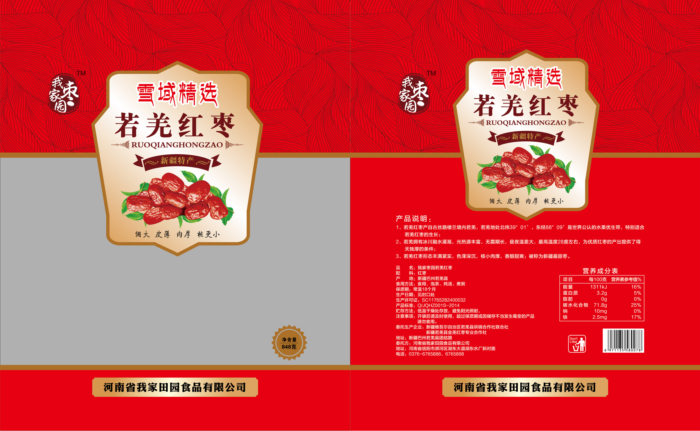
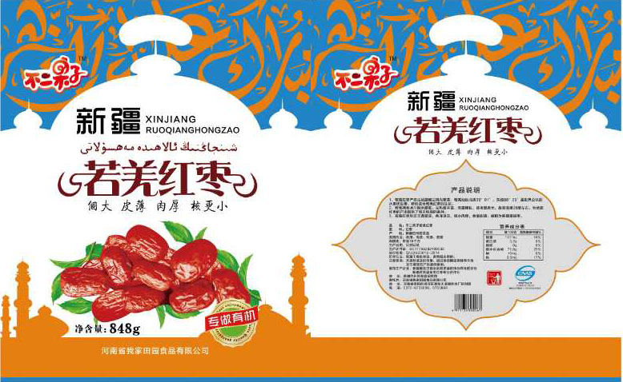
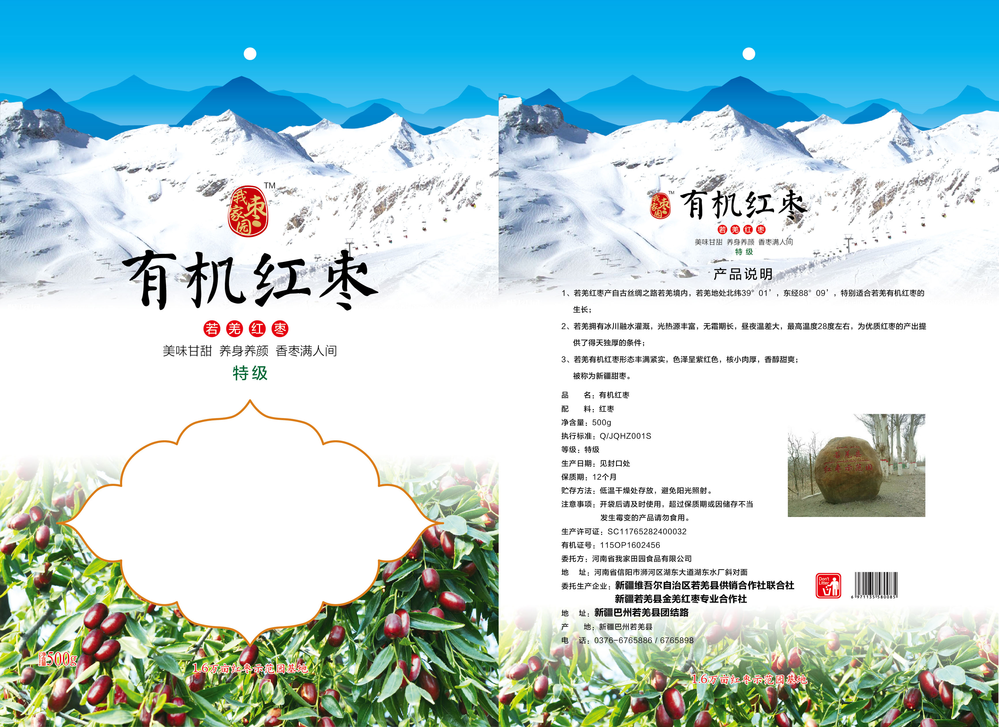
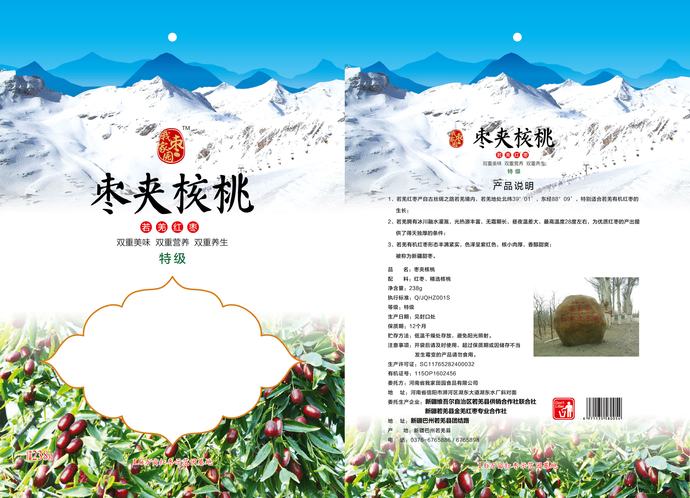
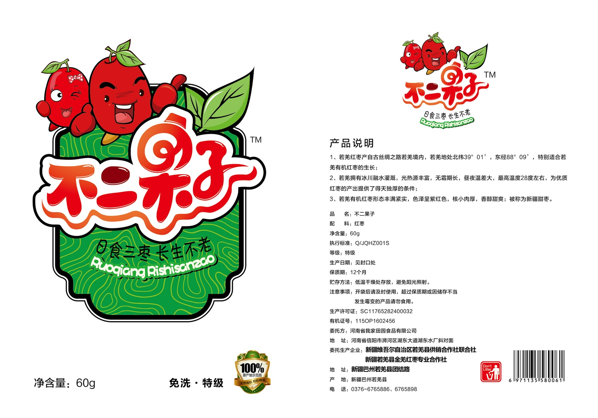
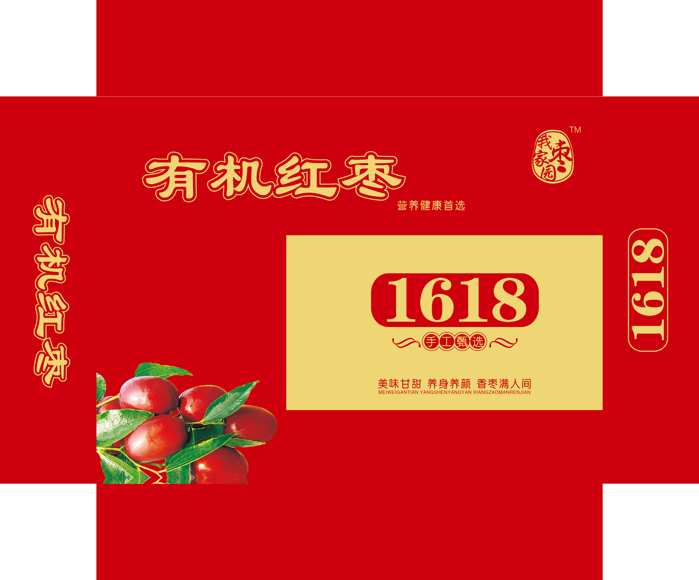

产品详情
若羌红枣产自古代丝绸之路若羌境内，若羌地处北纬39°01',东经88°09'，特别适合红枣的生长。 若羌拥有冰川融水灌溉，光热源丰富，无霜期长，昼夜温差大，为红枣的产出提供了得天独厚的条件。 若羌红枣心态丰满近视，色泽呈紫红色，核小肉厚，香醇甜爽；被称为新疆甜枣。
我家田园在若羌红枣示范园拥有1.6万亩枣园，所有有机红枣按照有机产品标准建立有《有机生产质量管理体系》， 从生长环境、种子、施肥、病虫害控制、储藏等整个生长过程加以严格的管理和控制。有机不同于绿色， 不仅不能使用转基因技术，而且农药和化肥也是被禁止的。我们的辛劳也换来了国家的认证。
2014年习近平总书记在新疆果业集团有限公司品尝若干羌枣后，连声称赞“若羌枣，味道好”。
我们在枣园四周种植了大量的胡杨，提高枣树存活率的同时，配合农家肥改善土壤质量。对于虫害， 我们采取了物理、人工等环境友好式的预防措施。若羌风期长风力大，致使枣子容易脱落， 但我们坚持不使用固果农药，宁愿承担一些损失，也要确保有机红枣的绿色安全。 部分激素类的农药虽然国家是允许使用的，但我们秉持着百分百纯天然的理念，杜绝了一切农药的使用， 我们用严格的标准来要求自己，只为给顾客提供安全放心的有机红枣。园区内枣树树龄在十到二十年之间， 结出的枣子颗粒饱满，口感上佳。
所有红枣自然成熟，自然挂干，多了三十天的生长期，带来更多的甘甜和营养。 我们全部人工采摘，使用专业设备在无菌环境下进行清洗和烘干，机器筛选 后又通过人工的方式，确保红枣颗颗晶莹饱满。严格的标准，只为出产优良、 高品质的红枣，树立我家田园的品牌。
好的红枣造就好的产品，我家田园面对不同消费人群，推出我家枣园和不二果子两个品牌，具体的产品及价格如下：
| 品 名 | 规 格 | 包装预览图 |
|---|---|---|
| 我家枣园红枣 | 848g |  |
| 不二果子有机红枣 | 848g |  |
| 我家枣园实惠装 | 1000g |  |
| 我家枣园精装 | 500g |  |
| 我家枣园枣夹核桃 | 238g |  |
| 不二果子 | 60g |  |
| 1618礼盒 | 1618g |  |